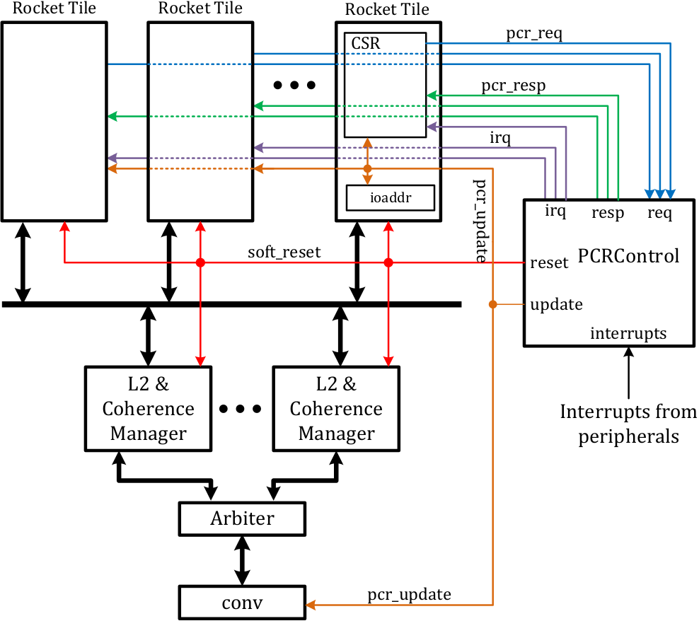

Memory and I/O maps, soft reset, and interrupts
Note: the content of this section is subject to change as the specification develops.
This untethered release starts to regulate the shared resources among cores, such as interrupts, memory and I/O maps, global timers, etc. A subset of control status register (CSR) space is defined as processor control registers (PCRs), whose values and accesses are shared by all cores and controlled by a global PCR control unit (PCRControl). The connections of the PCR control units is shown below.

Ports of PCRControl
PCR read/write requests (pcr_req)
The CSR file in each core has a dedicated request channel to the global PCR control unit. When a CSR address is identified as a PCR, the CSR request is forwarded to PCRControl.
PCR read/write response (pcr_resp)
Upon receiving a request from pcr_req, the PCR control unit processes the
request and sends back a response through the pcr_resp port connected to the
requesting core when it is finished. When it is a read request, the PCR value
is sent back in the response.
Broadcast of PCR update (pcr_update)
Operations on some PCRs trigger changes of the global status, such as changing
the I/O map. In this case, the updated PCR is broadcast to all components
potentially affected by this change. In this implementation, every L1 D$ has
an ioaddr module for identifying I/O requests. To enforce the address
mapping defined in the memory map, a memory address converter (conv) is
added just below the L2 arbiter. Besides CSR modules, all ioaddr modules and
the memory address converter receive PCR updates to track the changes in I/O
and memory maps.
IRQ (irq)
All cores share the same interrupt sources but they can enable/disable individual interrupts separately. When an interrupt arrives, it is forwarded to all cores who have enabled it.
Soft reset (soft_reset)
When a soft reset is triggered (a write to CSR reset), a reset signal is
broadcast to all cores and the L2.
Individual PCRs
All PCRs are readable or writable in machine mode ONLY.
| Name | Address | Operation | Reset value | Description |
|---|---|---|---|---|
| time | 0x701 |
Read Only | 0 | Global wall clock. |
| tohost | 0x780 |
Read/Write | 0 | Legacy, only used in ISA regression test to identify return value. |
| fromhost | 0x781 |
Read/Write | 0 | Legacy, not used. |
| reset | 0x782 |
Read/Write | 0 | When written, trigger a soft reset. Always reads 0. |
| mem_base0 | 0x7a0 |
Read/Write | InitMemBase | Base address of memory section 0. |
| mem_mask0 | 0x7a1 |
Read/write | InitMemMask | Address mask of memory section 0. |
| mem_phy0 | 0x7a2 |
Read/Write | InitPhyBase | Physical base address of memory section 0. |
| mem_base1 | 0x7a4 |
Read/Write | 0 | Base address of memory section 1. |
| mem_mask1 | 0x7a5 |
Read/write | 0 | Address mask of memory section 1. |
| mem_phy1 | 0x7a6 |
Read/Write | 0 | Physical base address of memory section 1. |
| mem_base2 | 0x7a8 |
Read/Write | 0 | Base address of memory section 2. |
| mem_mask2 | 0x7a9 |
Read/write | 0 | Address mask of memory section 2. |
| mem_phy2 | 0x7aa |
Read/Write | 0 | Physical base address of memory section 2. |
| mem_base3 | 0x7ac |
Read/Write | 0 | Base address of memory section 3. |
| mem_mask3 | 0x7ad |
Read/write | 0 | Address mask of memory section 3. |
| mem_phy3 | 0x7ae |
Read/Write | 0 | Physical base address of memory section 3. |
| mem_update | 0x7af |
Read/Write | 0 | When written, trigger memory map update. Always reads 0. |
| io_base0 | 0x7b0 |
Read/Write | InitIOBase | Base address of I/O section 0. |
| io_mask0 | 0x7b1 |
Read/write | InitIOMask | Address mask of I/O section 0. |
| io_base1 | 0x7b4 |
Read/Write | 0 | Base address of I/O section 1. |
| io_mask1 | 0x7b5 |
Read/write | 0 | Address mask of I/O section 1. |
| io_base2 | 0x7b8 |
Read/Write | 0 | Base address of I/O section 2. |
| io_mask2 | 0x7b9 |
Read/write | 0 | Address mask of I/O section 2. |
| io_base3 | 0x7bc |
Read/Write | 0 | Base address of I/O section 3. |
| io_mask3 | 0x7bd |
Read/write | 0 | Address mask of I/O section 3. |
| io_update | 0x7bf |
Read/Write | 0 | When written, trigger I/O map update. Always reads 0. |
| int_en0 | 0x7c0 |
Read/Write | 0 | IRQ enable for core 0. |
| int_pending0 | 0x7c1 |
Read Only | N/A | Pending IRQ for core 0. |
| int_en1 | 0x7c2 |
Read/Write | 0 | IRQ enable for core 1. |
| int_pending1 | 0x7c3 |
Read Only | N/A | Pending IRQ for core 1. |
| int_en2 | 0x7c4 |
Read/Write | 0 | IRQ enable for core 2. |
| int_pending2 | 0x7c5 |
Read Only | N/A | Pending IRQ for core 2. |
| int_en3 | 0x7c6 |
Read/Write | 0 | IRQ enable for core 3. |
| int_pending3 | 0x7c7 |
Read Only | N/A | Pending IRQ for core 3. |
| int_en4 | 0x7c8 |
Read/Write | 0 | IRQ enable for core 4. |
| int_pending4 | 0x7c9 |
Read Only | N/A | Pending IRQ for core 4. |
| int_en5 | 0x7ca |
Read/Write | 0 | IRQ enable for core 5. |
| int_pending5 | 0x7cb |
Read Only | N/A | Pending IRQ for core 5. |
| int_en6 | 0x7cc |
Read/Write | 0 | IRQ enable for core 6. |
| int_pending6 | 0x7cd |
Read Only | N/A | Pending IRQ for core 6. |
| int_en7 | 0x7ce |
Read/Write | 0 | IRQ enable for core 7. |
| int_pending7 | 0x7cf |
Read Only | N/A | Pending IRQ for core 7. |
Time
The current wall clock counts at 50MHz. The value of this wall clock is updated to all cores every 20 cycles. The wall clock is not writable.
When a core reads the CSR time, an actual read of the wall clock is
initiated. However, the timer comparator in each core is compared against the
infrequently updated local copy, which incurs a 20 cycle inaccuracy in the
worst case.
To/from host
This pair of registers are kept for legacy reasons. They are used in the ISA regression test only for identifying the end of a test and the return value. Writing tohost has no effect in FPGA but writing a non-zero value to fromhost triggers an exception.
Reset
Writing any value to reset triggers a soft reset.
Memory map
This implementation supports up to 4 separate memory sections. The space of any two sections should not overlap.
For each section, mem_base defines the base address as seen by the core;
mem_mask defines the actual size of the section; mem_phy defines the base
address as seen by on-chip interconnects. When mem_mask is 0, the section is
disabled (size of 0). For any address (addr), it belongs to a memory section
if (addr & ~mem_mask) == mem_base. The translated address to on-chip
interconnects is (addr & mem_mask) | mem_phy.
The update of a memory section should be an atomic operation. To ease this requirement, any write to a memory map is buffered. The actual update to the memory map is triggered by a write to mem_update.
I/O map
This implementation supports up to 4 separate I/O sections. The space of any two sections should not overlap.
For each section, io_base defines the base address; io_mask defines the actual size of the section. When io_mask is 0, the section is disabled (size of 0). For any address (addr), it belongs to an I/O section if (addr & ~io_mask) == io_base. There is no address translation for I/O addresses.
Similar to the memory map, the update of an I/O section should be an atomic operation. In the same way, any write to I/O map is buffered. The actual update is triggered by a write to io_update.
IRQs
Up to 64 interrupt sources are supported.
Every core has two PCRs: int_en and int_pending. int_en defines which IRQ should be notified to the core, while int_pending identifies any pending IRQs. The actual interrupt sources are latched in the PCR control unit. The value of int_pending is generated by int_pending = interrupt & int_en.
When an IRQ is triggered, the responding core can find out the actual IRQ source by reading int_pending. Currently the responding core needs to access the actual peripheral to resolve a pending IRQ.
In this implementation, interrupt bit 0 is connected to UART and bit 1 is connected to SPI.